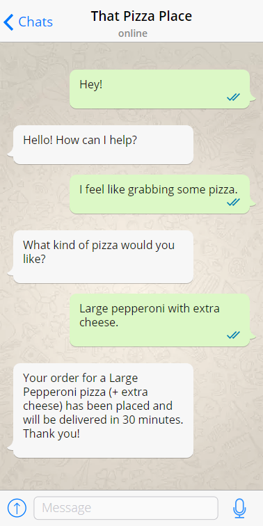
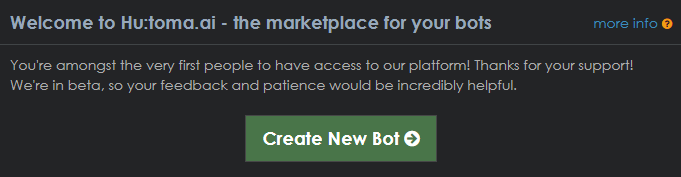
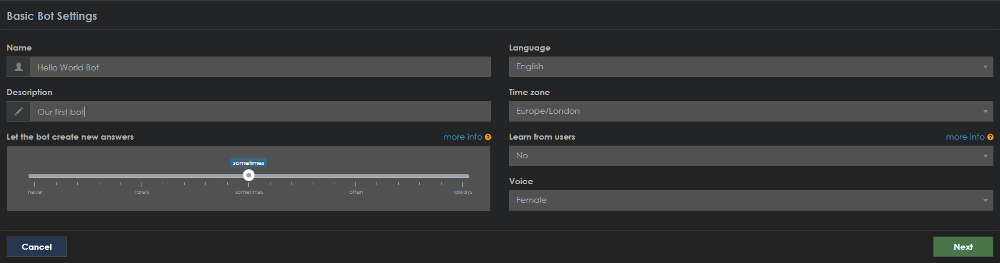
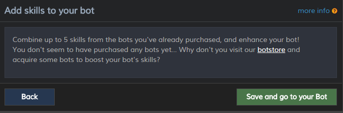
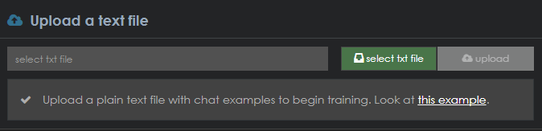
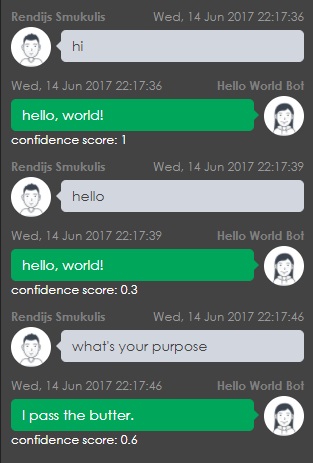
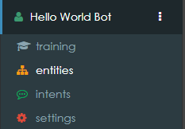
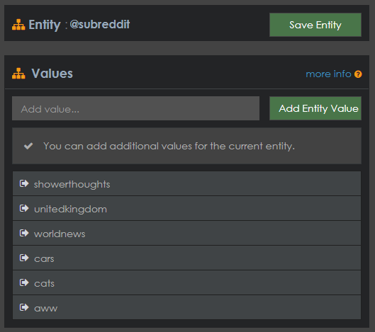
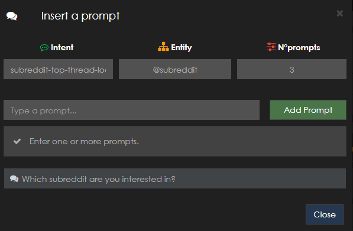
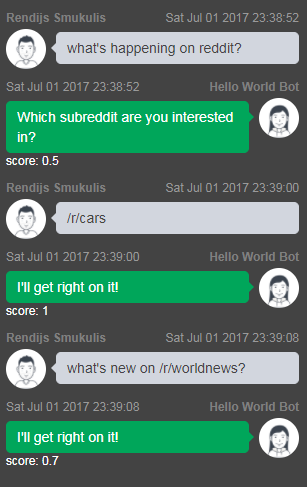

Getting started with Hu:toma.ai chat bot platform
Hu:toma recently launched their open beta, and since I've had a bit of fun playing around with it, I think it deserves a quick post. So what is Hu:toma? It's a platform for developing, publishing and selling conversational bots. It enables developing and training bots that your users can have a free-text conversation, while integrating with your APIs. For example:

Hu:toma lets developers upload some training data in the form of example conversations. It then trains the bot using their deep learning network to allow the bots to understand variations of the questions and requests from the users. For more info, watch this quick video or check out their site.
Getting started
Before you can build your first bot, you need to get access to the beta program. At the time of writing there was a wait list for the beta, but this might change soon. To join the waitlist, hit their page and click Login, it'll ask for your email. Once you receive the invite, you can start training your chat-bot army.
Once that's sorted, you can log in to the console and create your
first bot. Hit the green Create Bot button:

Name it something appropriate, I started off with the familiar name of Hello World Bot, some description, and leaving the other options unchanged:

Hit Next, then save your creation:

Next step is to prepare some basic conversation samples to let the neural net train the bot. Start with something basic, and create a text file with these lines:
hi
hello, world!
who are you?
I am the Hello World bot
what is your purpose?
I pass the butter.
In the console, hit select txt file, pick your newly created training data and upload it:

After the upload, the training process will start. Once it finishes, you can try chatting to your
newly trained bot. Note how you do not have to use the exact phrases from training data. For example,the bot will match both hi and hello to the response associated with hi:

You can imagine training the network with existing data sets of frequently asked questions - this would allow users to ask questions in fairly varied forms, and get the specified answers.
Giving the bots a purpose
While being able to train the bot with some pre-defined questions and answers is neat, the really interesting interactions happen when the bot can perform some action; e.g. the previously mentioned pizza-ordering bot.
Hutoma uses two concepts to allow a bot perform an action. The task itself is called an intent. Example
intents might be order a pizza, call a cab or check weather info. The "inputs" to these actions are (somewhat ambiguously) named
entities. For example, if the pizza-ordering intent needs to know the size of the pizza and the type of the toppings, it would
use two entities, topping and size. Think of each entity as an enum, you can specify the range of values for it,
then the user chooses one by talking to the bot.
Let's create a bot that can report the top threads in a given subreddit on Reddit. To report on a given
subreddit, the bot will need to know which subreddit we are interested in. As such, we need to create a new entity. In the left
hand menum, select the bot you created earlier, and choose entities.

Create a new entity with a meaningful name, e.g. subreddit. Then add some subreddit names you want the bot to be able to query and save it.

Next we need to create an intent that represents the "get top subreddit threads" task. Navigate to the intents section. In there,
name your new intent (e.g. subreddit-top-thread-loader) and click create.
Under User Expressions, enter some sample queries users might initiate the intent (task) with. For the Reddit intent, I've used:
what's new on reddit
what's hot on reddit
what's hot in worldnews
what's new on /r/cars
Including the entity value in the query allows the bot to figure out which subreddit the user is interested in without queryign for it separately.
Next, you need to add the subreddit entity and give a sample prompt for it. Bot will use this prompt to ask the user to
choose a subreddit if they haven't already done so.

Next, choose a default response, e.g. I'll get right on it!. Normally, when using a webhook, the bot would only use the
response when the call to the webhook failed. For our initial testing without a webhook, we'll always expect to see the
default response.
Hit Save Intent, and, after the re-training is done, you can chat away:

Note the bot queries me for the specific subreddit when I didn't mention it in the first question, but
picks up the subreddit name when I ask what's new on /r/worldnews.
Getting the message across
Now that our bot can interpret what we want to load from Reddit, let's actually enable it to load some threads from the requested subreddit. To achieve this, we need a web service that can act as a proxy between our bot and Reddit. It will provide an interface for the bot to call, retrieve some data from Reddit, then return that to the bot.
I used AWS API Gateway and a Lambda function to react to requests, but that's just one of the many posible solutions. To integrate your bot with an API, all you need to do is provide the API endpoint's URL in the WebHook part of the bot's configuration. The endpoint needs to accept a POST request.
Here's a sample request Hutoma bot fires at the API:
{
"intentName":"subreddit-top-thread-loader",
"memoryVariables":[
{
"entity":"subreddit",
"value":"cars",
"mandatory":true,
"entity_keys":[
"aww",
"cars",
"cats",
"showerthoughts",
"unitedkingdom",
"worldnews"
],
"prompts":[
"Which subreddit are you interested in?"
],
"times_prompted":0,
"max_prompts":3,
"persistent":false,
"system_entity":false
}
],
"chatResult":{
"score":1.0,
"query":"what's new on /r/cars?",
"answer":"I'll get right on it!",
"elapsedTime":2.764
}
}
It includes everything we need to react to the request:
- The original query by the user
- The intent's entity type (
subreddit) - The value of the entity,
carsin this case, meaning the user is interested in the/r/carssubreddit.
I used reddit's praw library to load the new submissions. Here's the code for the Lambda function:
import praw
reddit = praw.Reddit(client_id='[YOUR CLIENT ID HERE]',
client_secret='[YOUR CLIENT SECRET]',
user_agent='AWS Lambda PRAW client')
def lambda_handler(event, context):
# Extract the required subreddit's name from the Hutoma request
kvps = _get_kvp_from_hutoma_request(event)
subreddit = kvps['subreddit']
# Load some data from the subreddit
titles = []
for submission in reddit.subreddit(subreddit).hot(limit=5):
titles.append('"{}": https://reddit.com{}'.format(submission.title, submission.permalink))
# Return to the Hutoma bot
return {"text": ' \r\n\r\n'.join(titles)}
def _get_kvp_from_hutoma_request(request):
"""Transforms the Hutoma Request into a key-value dictionary"""
entity_dict = {}
for h_var in request['memoryVariables']:
h_value = h_var['entity']
if h_value not in entity_dict:
entity_dict[h_value] = h_var['value']
return entity_dict
This will return the titles and URLs of the top five hot submissions in the requested subreddit. After adding the API's URL to the bot's WebHook setting, you can chat with the bot and have it fetch data from the new endpoint: